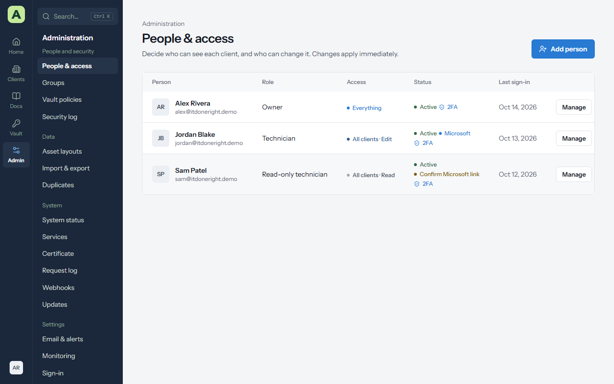
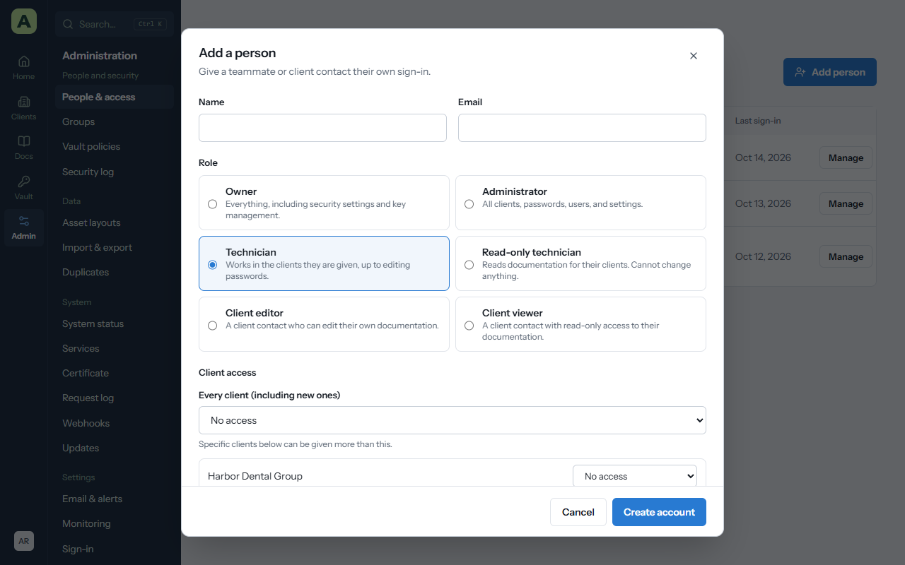
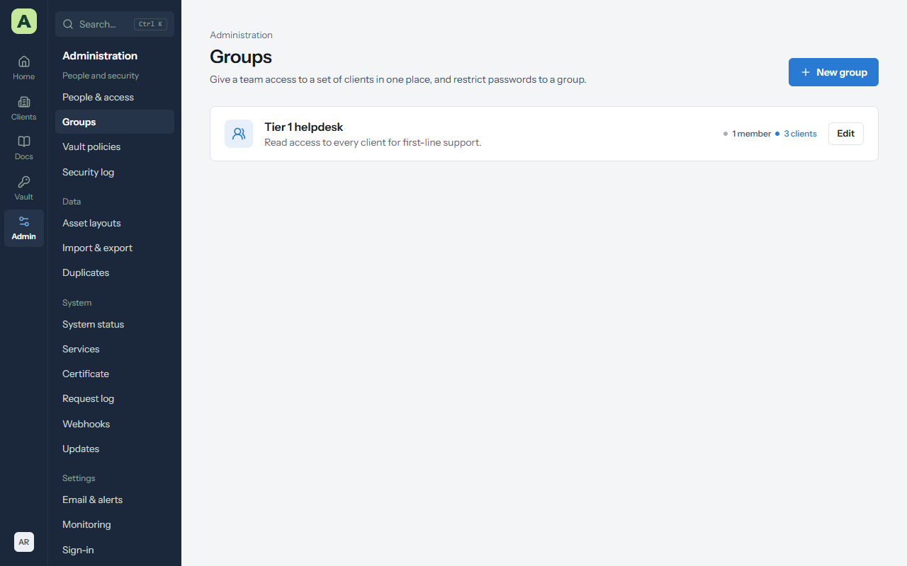
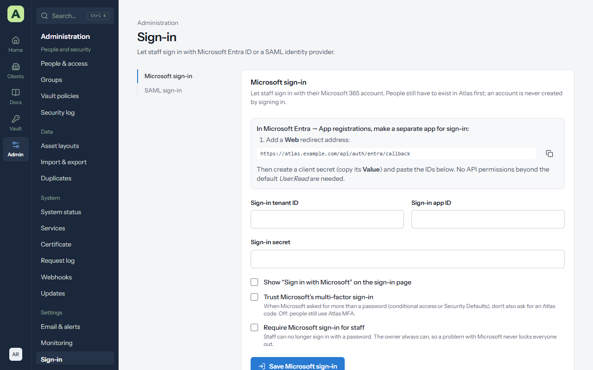
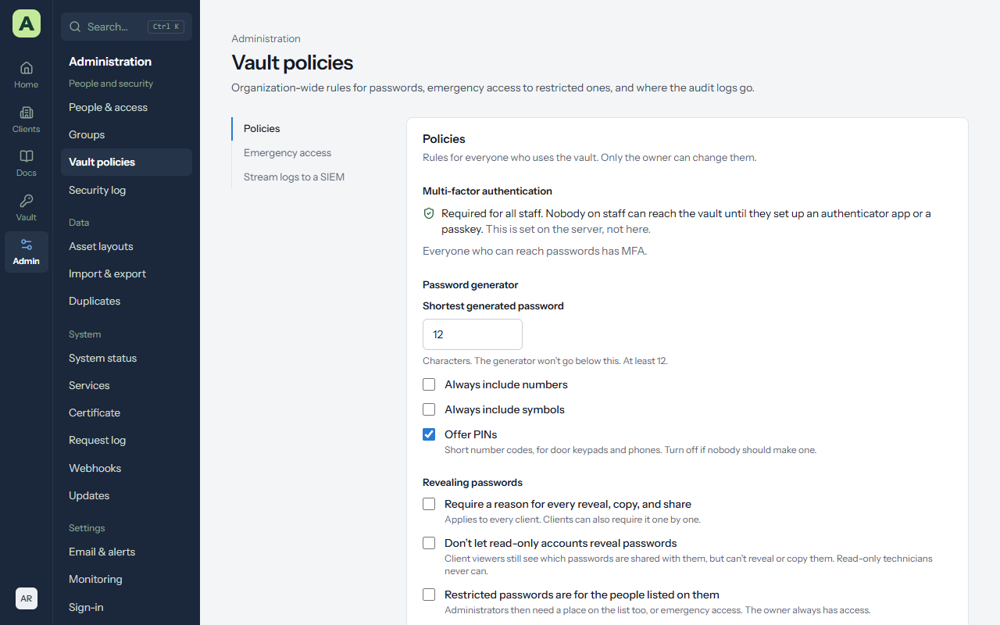
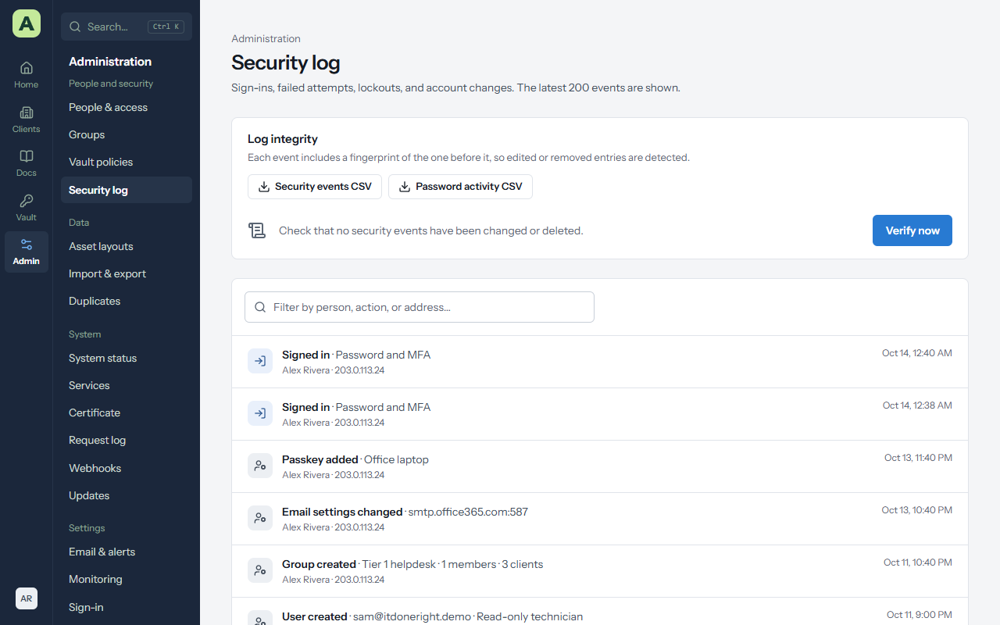

Chapter 10
People and access
This chapter is for administrators. It covers who can sign in, what each person can reach, and the rules that protect the vault.
People & access


Admin → People & access lists everyone who can sign in, with their role, their access, whether two-step verification is on, and when they last signed in. Choose Manage to change someone.
Add a person


- Choose Add person.
- Enter their Name and Email.
- Choose their Role. See the roles table.
- Under Client access, choose a level for Every client (including new ones), then raise it for individual clients if you need to.
- Choose Create account. Atlas shows a temporary password for them to change at first sign-in.
Staff must set up two-step verification before they can do anything else.
Access levels
For each client, a person has one of No access, Read, Edit or Edit + passwords.
- The Every client level applies to every client, including clients added later.
- A per-client level can raise it for one client.
- A person's access is the highest of their own levels and their groups' levels, but never more than their role allows.
Changes apply straight away, even to people who are signed in.
When someone loses their phone
Choose Manage, then Reset sign-in, and tick Also reset two-step verification. They set it up again next time they sign in.
When someone leaves
Edit them and tick Disable this account. Their sessions end at once, the browser extension and Atlas for Windows are signed out, and their history stays. Ask them first to move anything in their personal vault that the company needs.
Sign out everywhere ends every session for a person without disabling them, for example if a laptop is lost.
Safeguards
- You can't change your own role or disable yourself.
- Administrators can't create, change or reset owners. At least one active owner must remain.
- Changing someone's role lowers their client access to what the new role allows.
Groups
Admin → Groups gives a team access to a set of clients in one place. Add people to a group and give the group a level for each client. Someone in several groups gets the highest level any of them gives. Groups can also be listed on restricted passwords.


Single sign-on
Staff can sign in with Microsoft Entra ID or any SAML 2.0 identity provider (Okta, Google Workspace, Duo, JumpCloud and others). Both are set up under Admin → Sign-in, and both follow the same rules:
- Signing in never creates an account. Add the person in Atlas first, with the same email address they have at the provider.
- An administrator confirms each person's first link. The first time someone signs in, Atlas matches them by email and stops. Open them under People & access → Manage, check the name, email and ID shown, and choose Confirm Microsoft account or Confirm SAML account. After that Atlas recognizes them by the provider's own ID, so a changed address still works and a look-alike address gets nowhere.
- The owner can always use a password. With Require single sign-on for staff on, other staff can't sign in with a password or passkey, but the owner can, so a problem at the provider never locks everyone out.
- Atlas's own two-step verification still applies unless you choose to trust the provider's.


Microsoft Entra ID
- In the Microsoft Entra admin center, under App registrations, make a separate app for sign-in, and add the Web redirect address shown on the Microsoft sign-in card.
- Create a client secret and copy its Value.
- In Atlas, enter the Sign-in tenant ID, Sign-in app ID and Sign-in secret.
- Tick Show “Sign in with Microsoft” on the sign-in page and choose Save Microsoft sign-in.
- Try it in a private window before you tick Require Microsoft sign-in for staff.
Trust Microsoft's multi-factor sign-in skips the Atlas code when Microsoft already asked for more than a password (through conditional access or Security Defaults).
SAML
-
In your identity provider, add a SAML app using the Single sign-on (ACS) URL and
Audience (SP entity ID) shown on the SAML sign-in card. Send the person's
email as an attribute named
email, and choose a name ID that never changes for a person. The provider must sign the assertion. - In Atlas, enter the Identity provider name (it goes on the button), its Provider issuer (entity ID), its Provider sign-on URL, and paste its Provider signing certificate.
- Tick Show “Sign in with your provider” on the sign-in page, choose Save SAML sign-in, and try it in a private window before requiring it.
Start from the Atlas sign-in page, not the provider's app tile: Atlas refuses a response it didn't ask for. When the provider issues a new certificate, paste the old and new together, then remove the old one once the provider has switched.
Vault policies


Admin → Vault policies holds the rules for the whole vault. Every administrator can see them; only the owner can change them.
| Policy | What it does |
|---|---|
| MFA | Lists every active account that can reach passwords without two-step verification, such as client accounts. |
| Generator | The shortest password the generator makes, whether it always includes numbers or symbols, and whether it offers PINs. |
| Require a reason for every reveal, copy, and share | Applies to every client, on top of each client's own setting. |
| Don't let read-only accounts reveal passwords | Client viewers still see which passwords are shared with them, but can't reveal or copy them. |
| Restricted passwords are for the people listed on them | Administrators need a place on an entry's list like everyone else. The owner always has access. |
| Give each staff member a personal vault | Turns My vault on or off for everyone. Turning it off hides the vaults without deleting anything. |
Emergency access
For when the owner can't be reached and a restricted password is needed.
- The owner adds trusted administrators under Emergency access, each with a wait between one hour and a week.
- A trusted administrator requests access and says why. The owner is emailed at once.
- During the wait the owner can Deny it or Approve now. Otherwise access starts when the wait ends, and everyone involved is emailed.
- Access covers every restricted password for 24 hours. The owner can end it early.
Every step is in the security log, and each password used this way says Emergency access in its access history.
Streaming logs to a SIEM
Stream logs to a SIEM sends new security events and password access as they happen, about every 30 seconds, by HTTPS webhook (JSON, optionally signed with HMAC-SHA256) or syslog (RFC 5424 over TLS, TCP or UDP). If the SIEM can't be reached, Atlas records the error on the page and tries again from the same place, so nothing is skipped. Send a test event checks the connection.
The security log


Admin → Security log records sign-ins, failures, lockouts, account and access changes, API key use, exports, backups, service actions and updates, each with the address it came from. Vault access lists every password reveal, copy, change and share.
- Export either log as CSV. Atlas asks for your password again first.
- Verify now checks that no event has been changed, reordered or removed since it was written. Events are chained together by the database, with a signed checkpoint.
- Logs are kept forever by default. Choose 1 to 7 years under Admin → Email & alerts → Alerts and logs.